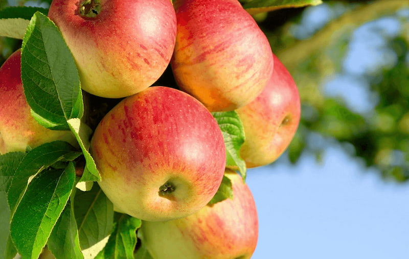

Яблоки
Яблоки, как и груши, принадлежат к семейству семечковых. Они созревают ближе к концу лета, а урожай собирается до поздней осени. Яблоки считаются самым потребляемым фруктом в мире. Разные сорта отличаются между собой по цвету, форме, вкусу и времени созревания.

История появления яблок в питании
Плоды диких предков яблонь употреблялись в пищу всегда. Одомашнили дерево примерно 5 тыс.лет назад на территории Казахстана и Киргизии. Предположительно оттуда яблоки распространились по Европе.
В Древней Греции особенно активно культивировали яблоки – уже тогда вывели десятки сортов. Эти фрукты нашли свое место и в культуре: например, «золотые яблоки», якобы дарующие вечную молодость. Даже Авалон – кельтское название рая – переводится как «яблочная страна».
Еще в 2005 году всемирное производство яблок составляло 55 млн. тонн в год. Китай основной производитель, выращивает около 2/5 всего объема. В этой стране очень ценятся эти фрукты. Их дарят в качестве благодарности за гостеприимство хозяев. Даже само слово «яблоко» по-китайски одновременно означает как фрукт, так и «мир».